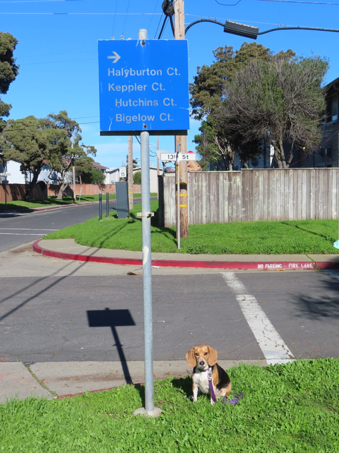

Halyburton Court is the San Francisco street with the name closest to Halley's. It's inside an area fenced off for some kind of deadly contamination, which Huxley and Wallace visited years ago but which Halley has not been able to penetrate since someone fixed the hole in the fence. There is also a Healy Street on Yerba Buena Island, entirely within the inaccessible Coast Guard station.
Halley Beagle sanfrancisco